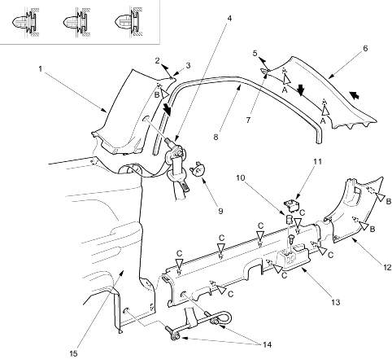

Interior Trim
Trim Removal/Installation - Door Area
|
20-34 |
|
NOTE:
- Put on gloves to protect your hands.
- When prying with a flat-tip screwdriver, wrap it with protective tape to prevent damage.
- Take care not to bend or scratch the trim and panels.
- LHD is shown, RHD is symmetrical.
Remove the trim as shown. To remove the door sill trim and centre-pillar upper trim, remove the side trim panel as necessary (see page 20-35).
Install the trim in the reverse order of removal and note these items:
 |
- CENTRE PILLAR UPPER TRIM
- To headliner
- PIN
- FRONT SEAT BELT UPPER ANCHOR BOLT
7/16 - 20 UNF
32 Nm (3.3 kgf/m, 24 lbf/ft)
- To headliner
- FRONT PILLAR TRIM
- PIN
- DOOR OPENING TRIM
- UPPER ANCHOR COVER
- OPENER LOCK CYLINDER
(For some models)
- FRONT SIDE CAP
- KICK PANEL
- DOOR SILL TRIM
- FRONT SEAT BELT LOWER ANCHOR BOLTS
7/16 - 20 UNF
32 Nm (3.3 kgf/m, 24 lbf/ft)
- SIDE TRIM PANEL
|
 : Clip, 2B
: Clip, 2B